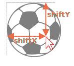

拖放（Drag'n'Drop）是一个很赞的界面解决方案。取某件东西并将其拖放是执行许多东西的一种简单明了的方式，从复制和移动文档（如在文件管理器中）到订购（将物品放入购物车）。
在现代 HTML 标准中有一个 关于拖放的部分，其中包含了例如 dragstart 和 dragend 等特殊事件。
这些事件使我们能够支持特殊类型的拖放，例如处理从 OS 文件管理器中拖动文件，并将其拖放到浏览器窗口中。之后，JavaScript 便可以访问此类文件中的内容。
但是，原生的拖放事件也有其局限性。例如，我们无法阻止从特定区域的拖动。并且，我们无法将拖动变成“水平”或“竖直”的。还有很多其他使用它们无法完成的拖放任务。并且，移动设备对此类事件的支持非常有限。
因此，在这里我们将看到，如何使用鼠标事件来实现拖放。
基础的拖放算法如下所示：
mousedown 上 —— 根据需要准备要移动的元素（也许创建一个它的副本，向其中添加一个类或其他任何东西）。mousemove 上，通过更改 position:absolute 情况下的 left/top 来移动它。mouseup 上 —— 执行与完成的拖放相关的所有行为。这些都是基础内容。稍后，我们将看到如何实现其他功能，例如当我们将一个东西拖动到一个元素上方时，高亮显示该元素。
下面是拖放一个球的实现代码：
ball.onmousedown = function(event) {
// (1) 准备移动：确保 absolute，并通过设置 z-index 以确保球在顶部
ball.style.position = 'absolute';
ball.style.zIndex = 1000;
// 将其从当前父元素中直接移动到 body 中
// 以使其定位是相对于 body 的
document.body.append(ball);
// 现在球的中心在 (pageX, pageY) 坐标上
function moveAt(pageX, pageY) {
ball.style.left = pageX - ball.offsetWidth / 2 + 'px';
ball.style.top = pageY - ball.offsetHeight / 2 + 'px';
}
// 将我们绝对定位的球移到指针下方
moveAt(event.pageX, event.pageY);
function onMouseMove(event) {
moveAt(event.pageX, event.pageY);
}
// (2) 在 mousemove 事件上移动球
document.addEventListener('mousemove', onMouseMove);
// (3) 放下球，并移除不需要的处理程序
ball.onmouseup = function() {
document.removeEventListener('mousemove', onMouseMove);
ball.onmouseup = null;
};
};如果我们运行这段代码，我们会发现一些奇怪的事情。在拖放的一开始，球“分叉”了：我们开始拖动它的“克隆”。
这是一个正在运行中的示例：
[iframe data-src="ball" height=230]
尝试使用鼠标进行拖放，你会看到这种奇怪的行为。这是因为浏览器有自己的对图片和一些其他元素的拖放处理。它会在我们进行拖放操作时自动运行，并与我们的拖放处理产生了冲突。
禁用它：
ball.ondragstart = function() {
return false;
};现在一切都正常了。
这是一个正在运行中的示例：
[iframe data-src="ball2" height=230]另一个重要的方面是 —— 我们在 document 上跟踪 mousemove，而不是在 ball 上。乍一看，鼠标似乎总是在球的上方，我们可以将 mousemove 放在球上。
但正如我们所记得的那样，mousemove 会经常被触发，但不会针对每个像素都如此。因此，在快速移动鼠标后，鼠标指针可能会从球上跳转至文档中间的某个位置（甚至跳转至窗口外）。
因此，我们应该监听 document 以捕获它。
在上述示例中，球在移动时，球的中心始终位于鼠标指针下方：
ball.style.left = pageX - ball.offsetWidth / 2 + 'px';
ball.style.top = pageY - ball.offsetHeight / 2 + 'px';不错，但这存在副作用。要启动拖放，我们可以在球上的任意位置 mousedown。但是，如果从球的边缘“抓住”球，那么球会突然“跳转”以使球的中心位于鼠标指针下方。
如果我们能够保持元素相对于鼠标指针的初始偏移，那就更好了。
例如，我们按住球的边缘处开始拖动，那么在拖动时，鼠标指针应该保持在一开始所按住的边缘位置上。

让我们更新一下我们的算法：
当访问者按下按钮（mousedown）时 —— 我们可以在变量 shiftX/shiftY 中记住鼠标指针到球左上角的距离。我们应该在拖动时保持这个距离。
我们可以通过坐标相减来获取这个偏移：
// onmousedown
let shiftX = event.clientX - ball.getBoundingClientRect().left;
let shiftY = event.clientY - ball.getBoundingClientRect().top;然后，在拖动球时，我们将鼠标指针相对于球的这个偏移也考虑在内，像这样：
// onmousemove
// 球具有 position:absoute
ball.style.left = event.pageX - *!*shiftX*/!* + 'px';
ball.style.top = event.pageY - *!*shiftY*/!* + 'px';能够更好地进行定位的最终代码：
ball.onmousedown = function(event) {
*!*
let shiftX = event.clientX - ball.getBoundingClientRect().left;
let shiftY = event.clientY - ball.getBoundingClientRect().top;
*/!*
ball.style.position = 'absolute';
ball.style.zIndex = 1000;
document.body.append(ball);
moveAt(event.pageX, event.pageY);
// 移动现在位于坐标 (pageX, pageY) 上的球
// 将初始的偏移考虑在内
function moveAt(pageX, pageY) {
ball.style.left = pageX - *!*shiftX*/!* + 'px';
ball.style.top = pageY - *!*shiftY*/!* + 'px';
}
function onMouseMove(event) {
moveAt(event.pageX, event.pageY);
}
// 在 mousemove 事件上移动球
document.addEventListener('mousemove', onMouseMove);
// 放下球，并移除不需要的处理程序
ball.onmouseup = function() {
document.removeEventListener('mousemove', onMouseMove);
ball.onmouseup = null;
};
};
ball.ondragstart = function() {
return false;
};In action (inside `<iframe>`):
[iframe data-src="ball3" height=230]如果我们按住球的右下角来进行拖动，这种差异会尤其明显。在前面的示例中，球会在鼠标指针下“跳转”一下。现在，更新后的代码可以让我们从当前位置流畅地跟随鼠标。
在前面的示例中，球可以被放置（drop）到“任何地方”。在实际中，我们通常是将一个元素放到另一个元素上。例如，将一个“文件”放置到一个“文件夹”或者其他地方。
抽象地讲，我们取一个 "draggable" 的元素，并将其放在 "droppable" 的元素上。
我们需要知道：
这个解决方案很有意思，只是有点麻烦，所以我们在这儿对此进行介绍。
第一个想法是什么？可能是将 onmouseover/mouseup 处理程序放在潜在的 "droppable" 的元素中？
但这行不通。
问题在于，当我们拖动时，可拖动元素一直是位于其他元素上的。而鼠标事件只发生在顶部元素上，而不是发生在那些下面的元素。
例如，下面有两个 <div> 元素，红色的在蓝色的上面（完全覆盖）。这里，在蓝色的 <div> 中没有办法来捕获事件，因为红色的 <div> 在它上面：
<style>
div {
width: 50px;
height: 50px;
position: absolute;
top: 0;
}
</style>
<div style="background:blue" onmouseover="alert('never works')"></div>
<div style="background:red" onmouseover="alert('over red!')"></div>与可拖动的元素相同。球始终位于其他元素之上，因此事件会发生在球上。无论我们在较低的元素上设置什么处理程序，它们都不会起作用。
这就是一开始的那个想法，将处理程序放在潜在的 "droppable" 的元素，在实际操作中不起作用的原因。它们不会运行。
那么，该怎么办？
有一个叫做 document.elementFromPoint(clientX, clientY) 的方法。它会返回在给定的窗口相对坐标处的嵌套的最深的元素（如果给定的坐标在窗口外，则返回 null）。
我们可以在我们的任何鼠标事件处理程序中使用它，以检测鼠标指针下的潜在的 "droppable" 的元素，就像这样：
// 在一个鼠标事件处理程序中
ball.hidden = true; // (*) 隐藏我们拖动的元素
let elemBelow = document.elementFromPoint(event.clientX, event.clientY);
// elemBelow 是球下方的元素，可能是 droppable 的元素
ball.hidden = false;请注意：我们需要在调用 (*) 之前隐藏球。否则，我们通常会在这些坐标上有一个球，因为它是在鼠标指针下的最顶部的元素：elemBelow=ball。
我们可以使用该代码来检查我们正在“飞过”的元素是什么。并在放置（drop）时，对放置进行处理。
基于 onMouseMove 扩展的代码，用于查找 "droppable" 的元素：
// 我们当前正在飞过的潜在的 droppable 的元素
let currentDroppable = null;
function onMouseMove(event) {
moveAt(event.pageX, event.pageY);
ball.hidden = true;
let elemBelow = document.elementFromPoint(event.clientX, event.clientY);
ball.hidden = false;
// mousemove 事件可能会在窗口外被触发（当球被拖出屏幕时）
// 如果 clientX/clientY 在窗口外，那么 elementfromPoint 会返回 null
if (!elemBelow) return;
// 潜在的 droppable 的元素被使用 "droppable" 类进行标记（也可以是其他逻辑）
let droppableBelow = elemBelow.closest('.droppable');
if (currentDroppable != droppableBelow) {
// 我们正在飞入或飞出...
// 注意：它们两个的值都可能为 null
// currentDroppable=null —— 如果我们在此事件之前，鼠标指针不是在一个 droppable 的元素上（例如空白处）
// droppableBelow=null —— 如果现在，在当前事件中，我们的鼠标指针不是在一个 droppable 的元素上
if (currentDroppable) {
// 处理“飞出” droppable 的元素时的处理逻辑（移除高亮）
leaveDroppable(currentDroppable);
}
currentDroppable = droppableBelow;
if (currentDroppable) {
// 处理“飞入” droppable 的元素时的逻辑
enterDroppable(currentDroppable);
}
}
}在下面这个示例中，当球被拖到球门上时，球门会被高亮显示。
[codetabs height=250 src="ball4"]
现在，我们在整个处理过程中，在当前变量 currentDroppable 中都存储了当前的“放置目标”，可以用它来进行高亮显示或者其他操作。
我们考虑了一种基础的拖放算法。
关键部分：
ball.mousedown -> document.mousemove -> ball.mouseup（不要忘记取消原生 ondragstart）。shiftX/shiftY，并在拖动过程中保持它不变。document.elementFromPoint 检测鼠标指针下的 "droppable" 的元素。我们可以在此基础上做很多事情。
mouseup 上，我们可以智能地完成放置（drop）：更改数据，移动元素。mousedown/up 使用事件委托。一个大范围的用于检查 event.target 的事件处理程序可以管理数百个元素的拖放。有一些在此基础上已经将体系结构构建好的框架：DragZone，Droppable，Draggable 及其他 class。它们中的大多数做的都是与上述类似的事情，所以现在你应该很容易理解它们了。或者自己动手实现。正如你所看到的，其实挺简单的，有时候比基于第三方解决方案进行改写还容易。